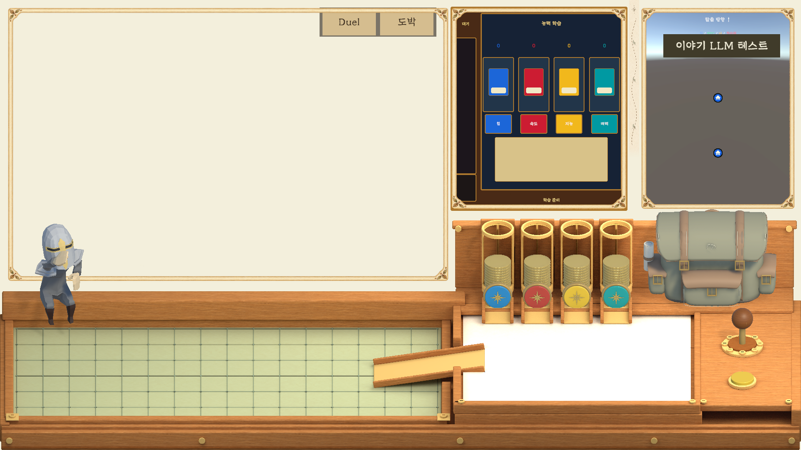
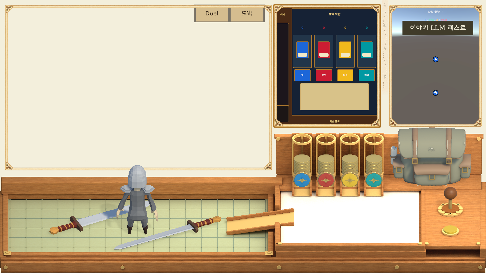

실제 게임 연결·최신 Inspector·검증 결과: 통합 보고서
학습 자판기 3D 에셋 초안
작업일: 2026-11-04 (Asia/Seoul). 사용자가 표시한 본체·왼쪽 학습 적층부·왼쪽 배출구와 받는 통을 실제 3D 메시로 제작했다. 아래 네 개 동전통은 제외했다.
Unity 에셋 패키지 · 실제 Unity 렌더 미리보기 · 검증 기록
| 단계 | 작업 | 상태 |
|---|
| 1 | 요청 범위와 프로젝트 확인 | 완료: Unity 6000.3.12f1 / URP |
| 2 | 본체·적층칸·배출구·개별 오브젝트 제작 | 완료 |
| 3 | 프리팹·배출 시연·패키지 제작 | 완료 |
| 4 | 렌더 및 참조·정렬·애니메이션 검사 | 완료. 다른 프로젝트에서의 새 가져오기는 미실시 |
사용 방법
.unitypackage를 Unity에서 가져온 뒤 Assets/AiAsset/LearningDispenserPrototype/Prefabs/LearningDispenser_Static.prefab을 배치한다. 앞면은 로컬 -Z 방향이다. 전체 루트 Scale을 게임 카메라에 맞게 줄여 사용한다. 본체 약 5.1 × 5.5 유닛, 왼쪽 배출부가 아래로 약 1.95 유닛 이어진다. 재질은 URP Lit 기반이다.
LearningDispenser_AnimatedDemo.prefab 또는 LearningDispenser_Demo.unity에서는 Play 시 간단한 배출 반복 동작을 볼 수 있다. Legacy Animation 클립을 사용한다. 실제 입력·학습 일정·코인 차감 로직은 이번 외형 에셋 범위에 포함하지 않는다.
구조와 수정
01_WoodCabinet은 본체, 02_ScheduledStack은 얇은 물체 39개가 쌓인 왼쪽 칸, 03_Column_*는 각 색상별 상단 코인·진열칸·누름 버튼, 04_LeftDispenser는 배출구·낙하 물체·받는 통이다. 각 부품은 독립 자식 오브젝트이며 버튼에는 별도 Collider가 있다. 버튼·코인·네 색 학습 책·얇은 적층 타일을 개별 프리팹으로 제공한다.
재현용 빌더가 메시·재질·프리팹·시연 씬·패키지를 만든다. Unity Pipeline의 run_script로 LearningDispenserBuilder.Build를 실행한다. 검증 진입점은 LearningDispenserBuilder.Validate다. 이미 출력 폴더가 있으면 재모델링하지 않고 프리뷰·패키지 완성을 재개한다. 새 모델 버전을 만들려면 Root와 출력 경로를 별도 이름으로 변경한다.
확인 결과와 한계
실행 중인 Unity 에디터에서 C# 컴파일 및 생성 성공. 185개 MeshRenderer의 재질과 영구 메시 참조를 검사했다. 네 열의 코인·진열칸·버튼 X축 일치를 검사했다. 배출 클립을 두 시점에 샘플링해 낙하 이동을 확인했다. 격리된 프리뷰 씬에서 1000×1400 이미지를 렌더링하고 시각 확인했다. unitypackage의 gzip/tar 디렉터리 구조를 확인했다.
별도 새 프로젝트로 패키지를 다시 가져오는 시험 및 실제 Play 진행 프레임 검사는 하지 않았다. 배출 동작은 클립 샘플 검사까지 완료했다. 단순한 로우폴리 초안이며 참고 이미지와 같은 완성도의 조각·텍스처는 구현하지 않았다. 기존 게임 씬을 저장하거나 게임 소스를 수정하지 않았다. 제작을 위해 Play를 한 번 종료했으며 검증 시 다시 Play 중인 것이 확인되어 해당 세션을 유지했다.
현황·다음 작업·임시 코드
패키지 제공 완료. 다음 작업은 사용자 게임 화면에서 크기·카메라 각도 검토 및 필요 시 기능 연결이다. 일회성 임시 코드는 없다. 빌더는 재현·수정에 필요한 유지 도구다. 출력 패키지와 미리보기는 기존 .gitignore의 output 규칙에 따라 로컬 배포물로 관리하고, 원본 Assets·빌더·이 보고서는 Git 포함 대상임을 확인했다. 기존 보고서 개발 원칙 스킬 보고서는 보존했다.

기사 캐릭터 책상 내려오기 애니메이션 정리
작업일: 2026-11-04 14:11 (Asia/Seoul). 목표: development-principles에 따라 이 채팅에서 만든 애니메이션의 필수 파일·재생성 도구를 보존하고, 오래된 출력과 Git 제외 규칙 및 실행·수정 안내를 정리한다. 위 자판기 작업 기록은 보존했다.
| 단계 | 주요 작업 | 확인 방법 | 상태 |
|---|
| 1 | 원본·최종 결과·유지 도구 구분, 오래된 출력 정리 | 이 채팅의 생성 목록과 Git 상태 대조 | 완료 |
| 2 | 안내서 포함, 재생성 출력 제외 | git check-ignore 및 git status | 완료: 안내서 예외와 생성물 제외 확인 |
| 3 | 현재 폴더에서 누락된 FBX 재생성 및 전체 프레임 검사 | Blender FBX 재불러오기 | 완료: 30fps·1~50프레임 통과 |
| 4 | 기존 HTML 보고서와 사용 안내 갱신 | UTF-8·관련 상대 링크 확인 | 완료: 정적 문서 검사, 브라우저 화면 검사는 미실시 |
사용할 파일과 현재 현황
Unity로 가져올 파일은 Knight_DeskDismount.fbx다. Blender 편집 원본도 함께 보존한다. 앉은 상태 → 책상에서 내려오기 → 착지 → 일어서기만 들어 있으며, 12개 기준 자세를 30fps·1~50프레임(약 1.67초)에 배치했다. 앉으러 접근하거나 다시 올라가는 동작은 없다.
전체 게임 실행과 인계에 관한 기존 문서는 Docs/PC_HANDOFF.md이며 이 작업에서는 수정하지 않았다. 애니메이션 실행·수정 방법은 기존 사용 안내서를 갱신했다. 이 안내서는 광범위한 Markdown 제외 규칙의 좁은 예외로 Git에 포함한다. 기존 게임 씬·Animator·사용자 파일 및 무관한 Git 변경은 건드리지 않았다. 커밋·푸시·스테이징은 수행하지 않는다.
핵심 구조와 변경 이유
- 기존 리깅 원본: 모델·재질·HumanArmature 원본. 최초로 제공된 Standing FBX에는 뼈대가 없어 이 원본으로 제작했다.
- create_desk_dismount.py:
keys에 12개 자세, tangent에 연속 속도 보간, limb에 고정 길이 도달 계산을 둔다. 발을 닿지 않는 목표 위치로 강제 이동하지 않고 실제 발목 관절에 붙여 부츠 변형을 방지했다. -- --skip-stills로 PNG 렌더 없이 최종 Blend/FBX를 재생성할 수 있게 했다.
- validate_desk_dismount.py: FBX를 다시 불러와 전체 50프레임의 메시 좌표·범위, 다리 관절 이동·크기, 클립 범위를 확인하는 유지 검증 도구다.
- render_dismount_video.py: 저장된 Blend에서 30fps 확인용 MP4를 재생성하는 유지 도구다.
실행·수정 방법
Blender 5.2.3 LTS를 사용했다. 프로젝트 루트의 PowerShell에서 다음을 실행한다. 재생성은 생성된 Blend/FBX를 덮어쓰므로 수동 편집본은 별도 이름으로 저장한다.
& 'C:/Program Files/Blender Foundation/Blender 5.2/blender.exe' --background --python AssetBuild/KnightRigFix/create_desk_dismount.py -- --skip-stills
& 'C:/Program Files/Blender Foundation/Blender 5.2/blender.exe' --background --python AssetBuild/KnightRigFix/validate_desk_dismount.py
& 'C:/Program Files/Blender Foundation/Blender 5.2/blender.exe' --background --python AssetBuild/KnightRigFix/render_dismount_video.py
12장 PNG도 필요하면 첫 명령의 -- --skip-stills를 뺀다. 게임 내 위치에 맞추려면 시작 골반 높이·손 지지점·책상 높이를 조절한다. Body 뼈에 약 0.45m 전진이 들어 있으므로 이동 스크립트로 중복 이동시키지 않는다.
검증 결과와 남은 작업
이번 재생성 후 Blender FBX 재불러오기 통과: 30fps·1~50프레임, 뼈 42개·정점 480개. 전체 프레임의 다리 로컬 이동 오차 최대 9.53e-7, 크기 오차 최대 3.58e-7로 임계값 0.001 이하다. 생성된 FBX는 494,588바이트다. 안내서의 Git 포함 예외, 필수 파일 비제외 및 미리보기·검사 JSON·번호 백업 제외를 확인했다. 기존 보고서 내용과 이번 절의 상대 링크·UTF-8을 정적 확인했으며 브라우저 렌더 검사는 하지 않았다.
이전 제작 단계에서 12장 렌더와 전체 50프레임 영상 출력을 확인했다. 이번 정리는 애니메이션 동작 자체를 바꾸지 않는다. 실제 Unity 가져오기·재생·게임 책상 높이 맞춤은 미확인이다. 기존 Mixamo Avatar와 뼈대가 달라 해당 Avatar를 그대로 복사하면 안 되며 별도 Humanoid 매핑 또는 이 모델의 Generic rig 설정이 필요하다. 다음 작업은 사용자가 Unity 적용을 요청하면 실제 캐릭터·책상 기준으로 연결하는 것이다.
Git 관리와 정리 상태
필수 보존: 기존 리깅 원본, 최종 Blend/FBX, 위 3개 유지 도구, 사용 안내서 및 이 누적 HTML 보고서. Git 제외: 재생성 가능한 pose_*.png, motion_preview.png, *_preview.mp4, validation.json, 로그와 Blender 번호 백업. 현재 12장 PNG·영상·검사 JSON은 로컬 확인용으로 유지한다.
임시 코드: 없음. 제작·검증·영상 스크립트는 모두 재현에 필요한 유지 도구로 보존한다. 만족 응답을 기다리는 일회성 코드도 없다. 사용자의 명시적인 정리 요청에 따라 아래 20개 생성 파일을 삭제했으며 사용자 파일·기존 리깅 원본·현재 12장 미리보기는 보존했다.
AssetBuild/KnightRigFix/DeskDismount/ 아래 이전 이미지: pose_030.png, pose_033.png, pose_043.png, pose_047.png, pose_054.png, pose_061.png, pose_062.png, pose_075.png, pose_087.png, pose_090.png, pose_097.png, pose_109.png, pose_125.png, pose_141.png, pose_161.png, pose_199.png 및 번호 백업 Knight_DeskDismount.blend1.AssetBuild/KnightRigFix/ 아래 로그: desk_dismount_build.log, desk_dismount_validation.log, desk_dismount_video.log.
삭제된 파일의 활성 도구·안내서 참조가 없음을 확인했다. 삭제 경로는 위 이력에만 남긴다. 기존 무관한 변경 Assets/Decision_YYS/Scripts/Controller/Ui/LearningDispenserView.cs.meta는 보존했다. 최종 파일과 도구는 Git 포함 가능한 미추적 상태이며 별도 커밋은 하지 않았다.
Knight_For_Ani 아바타·앉기·결투 진입 연결
작업일: 2026-11-04 (Asia/Seoul). 목표: 사용자가 지정한 Knight_For_Ani 외형에 앉기 Idle 중심의 랜덤 동작을 적용하고, 책상 내려오기 → 걷기 → Warrior Idle까지 연결하며, 표시한 NPC 손 시작 배치를 저장한다. 위의 과거 작업 기록은 당시 상태로 보존했다.
| 단계 | 주요 작업·확인 방법 | 상태 |
|---|
| 1 | 프로젝트 구조·인계 문서·Git·씬·리그 조사 | 완료. Unity 6000.3.12f1, Pipeline 0.7.0-exp.1, URP. 기존 실행 안내 Docs/PC_HANDOFF.md 확인. |
| 2 | 모델의 실제 뼈대 연결과 별도 Humanoid Avatar, FBX 호환 검사 | 완료. 지정 FBX 11개 Avatar 유효·Humanoid 클립 확인. |
| 3 | 랜덤 앉기·내려오기·걷기·Warrior Idle 및 취소·피격 복귀 검증 | 완료. 2026-11-04 15:27:50 (Asia/Seoul), 실제 Play 검사 21/21 통과. C# 컴파일 오류 없음. 최종 FBX 메타 11개의 Humanoid·Avatar 생성 설정을 디스크에서도 확인. |
| 4 | NPC 손 영구 시작점·재현 도구·문서 및 증거 보존 | 완료. 시작 위치·회전 실제 생성 복제본에서 확인. |
적용 결과와 원인
기존 Knight_For_Ani는 뼈대가 없는 MeshRenderer 조합이라 Avatar 지정만으로 애니메이션을 재생할 수 없었다. 기존 씬의 같은 기사 외형과 리깅된 몸체·헬멧·어깨 장비를 재사용해 Knight_For_Ani.prefab을 구성했다. 대상 전용 KnightForAniAvatar.asset과 KnightPresentation.controller을 연결했다. Knight_Center의 중복 메시 Renderer는 끄고 참조용 Transform은 유지했다.
Sitting Idle을 반복하며 Idle에서 6~8초 대기한 뒤 Sitting And Pointing / Sitting Rubbing Arm 중 하나를 무작위 재생한다. 동작을 끝까지 재생한 뒤 0.3초 블렌딩으로 Idle에 복귀한다. 팔 문지르기 원본은 약 7.97초이므로 동작을 7초마다 강제로 끊지 않으며, 다음 랜덤 대기는 Idle 복귀 후 다시 계산한다.
결투 시작은 기존 BeginDuel / BeginTestDuel 경로를 사용한다. 앉은 기사와 같은 프리팹을 해당 앉은 위치에서 움직이고, 원래 미리보기는 숨겨 중복을 막는다. 시작 당시 앉기 자세를 복사한 뒤 Knight_DeskDismount_Smooth(약 1.63초) → Walking → 기존 KnightSpawnPose의 위치·방향 → Warrior Idle로 연결한다. 진입 중 보드 입력을 잠그며 손 생성과 결투 판정은 도착 후 시작한다. 취소하면 코루틴·복제본을 정리하고 앉은 모습을 복원한다.
내려오기 원본의 Armature 스케일은 32.15, 대상 리그는 100이었다. 원본 Avatar를 자체 스케일로 교정하고 전진·높이 루트 이동을 분리했다. 대상 모델에서 실제 앉기·내려오기·걷기 골반 위치를 샘플링하여 시작·끝 기준점 차이를 구하고, 블렌딩과 함께 보정해 중복 이동과 자세 전환의 튐을 줄였다. 기존 피격 클립·상태도 보존했고, 이미 Warrior Idle로 블렌딩 중이면 대련 코드가 전환을 반복 초기화하지 않도록 했다.
핵심 코드와 Inspector 조정
| 위치·파일 | 역할·수정 항목 |
|---|
| KnightPresentation.cs / 씬의 Knight_For_Ani | ResetSeated·Update: 앉기와 랜덤 동작. Seated Interval=(6,8), Blend Seconds=0.3. EnterDuel: 내려오기·이동·도착. Walk Speed=1.35, Turn Speed=240. 시작·끝 Pose Offset은 빌더가 실제 Avatar 자세에서 계산한다. |
| TutorialMiniGameController.cs / _Systems/Decision_Manager | Seated Knight Pose=Knight_For_Ani, Knight Target Prefab=Knight_For_Ani, Knight Spawn Pose=KnightCharacter_Copy. 앉은 위치와 도착 위치는 해당 Transform으로 조정한다. 기존 배치 (-6.776,-7.400,0.732) → (-2.95,-7.895,-1.7582), Scale=0.5 유지. |
| DuelMiniGameBridge.cs | 비동기 진입이 끝난 뒤 손·입력·결투 상태 머신을 시작한다. 취소 시 잠갔던 입력을 복원한다. |
| NpcDuelStateMachine.cs | 새 기사는 Warrior Idle, 기존 모델은 기존 Idle 상태 사용. 기존 피격과 Warrior Idle 복귀 보존. |
| _Systems/DuelMiniGame / Duel Authoring References / Npc Hand Start Pose → NpcHandRoot | 영구 수정 위치. Position=(-5.36,-7.7199,-2), Rotation=(-73.519,170.87,-21.078). 실행 중 DuelNpcHand는 이 시작점에서 복제한다. 기존 크기 유지. 사진의 음수 회전은 Inspector에서 동치인 0~360도 값으로 보일 수 있다. |
실행·재현·검증
직접 확인: Assets/Scenes/DecisionScene.unity를 열고 Play. 처음에는 앉기와 랜덤 동작을 확인하고, 상단 Duel 버튼으로 내려오기·걷기·전투 대기를 확인한다. 도박으로 모드를 바꾸거나 결투를 정리하면 앉은 모습으로 복귀한다. 정상 게임 진입은 기존 MainMenuScene → 시작 버튼 경로를 유지한다.
KnightAnimationSetup.cs는 유지할 제작·점검 도구다. Inspect는 관련 씬·리그를 조사하고, ConfigureImports는 FBX Humanoid와 루트·반복 설정을 적용하며, Build는 Animator·프리팹·씬 연결 및 기준점 보정을 재생성한다. Build는 지정된 프리팹·컨트롤러와 DecisionScene을 저장하므로, 수동으로 조정한 값은 실행 전에 별도 보존한다. 새 소스 수정 후 Unity 컴파일이 끝나야 Build를 실행할 수 있다.
unity command run_script --caller plugin --skill unity-cli --file AgentScripts/KnightAnimationSetup.cs --entry KnightAnimationSetup.ConfigureImports
unity command run_script --caller plugin --skill unity-cli --file AgentScripts/KnightAnimationSetup.cs --entry KnightAnimationSetup.Build
# DecisionScene Play 중에만 실행. 테스트 모드로 진행하며 실제 플레이 저장은 수정하지 않는다.
unity command run_script --caller plugin --skill unity-cli --file AgentScripts/KnightAnimationChecks.cs --entry KnightAnimationChecks.Run
KnightAnimationChecks.cs는 실제 Animator 프레임·팔뼈 변화·두 랜덤 동작·루트 고정·진입 순서·프레임 시간 대비 골반 이동·도착·손 위치/회전·기존 피격 시작/복귀·취소/정리를 확인한다. 앉기 검사만 Time Scale=4로 가속하고 진입과 피격은 1배속으로 재생한다. 종료 시 Time Scale과 Random 상태를 복원한다. 검증 JSON 및 아래 6장은 실제 Play 화면이다.
앉기 Idle · 랜덤 가리키기 · 팔 문지르기 · 책상 내려오기 · 걷기 · Warrior Idle


현재 현황·다음 작업·한계
요청한 애니메이션 연결과 손 시작 배치를 적용했다. Sit To Stand 원본은 Humanoid 호환을 확인했지만 실제 진입에는 사용자가 마지막에 지정한 Knight_DeskDismount_Smooth를 사용한다. 칼 뽑기·휘두르기 클립은 Humanoid 가져오기까지만 확인했으며 기존 손 기반 전투 공격을 대체하지 않는다. Windows Player 빌드 및 실제 저장된 이야기에서 결투에 도달하는 전체 경로는 이번 범위에서 실행하지 않았다. 몸체 비율·책상 접촉점과 이동 속도의 최종 미감은 사용자 화면에서 추가 조정할 수 있다.
검사 해석: 기존 전투는 손을 잡기 전 피격 시간도 정지하므로, 피격 복귀 검사는 TryCaptureHand 후 수행했다. 캡처 저장으로 약 0.2초 지연되는 프레임은 실제 경과 시간의 이동량을 허용해 자세 점프와 구분했다. 작업 중 콘솔에 남은 Pipeline의 구형 editor status 명령 호환 오류·연결 타임아웃·초기 캡처 경로 오류 및 일시 메타 쓰기 오류는 실제 게임 재생 오류와 구분했다. 최종 컴파일 성공, 21개 실제 재생 검사와 디스크의 11개 메타 저장 설정을 별도로 확인했다.
Git·임시 코드 정리
필수 보존: 새 런타임 소스·메타, Avatar·Animator·리깅된 프리팹, 지정 FBX와 가져오기 메타, DecisionScene, 위 두 유지 도구, 사용 안내서와 이 누적 보고서. 보고서에 연결된 최종 6장 PNG와 검사 JSON은 .gitignore에 좁은 예외를 추가했다. 초기 조사 화면 2장은 2026-11-05 사용자 정리 요청에 따라 삭제했다. 기존 무관한 사용자 변경은 보존하며 스테이징·커밋·푸시는 하지 않았다.
임시 코드: 없음. AgentScripts/KnightAnimationSetup.cs와 AgentScripts/KnightAnimationChecks.cs는 재현·유지·회귀 검사 도구로 보존한다. 사용자 만족 응답을 기다리는 일회성 코드는 없다. 캡처 도구가 Assets/output에 만든 이번 초기 PNG는 프로젝트 output/KnightAnimationReview로 이동했고, 해당 자동 생성 메타·빈 디렉터리만 정리했다.
기사 애니메이션 정리 완료
작업일: 2026-11-05 (Asia/Seoul). 목표: 이 채팅의 애니메이션 정리를 마무리하고 후속 Unity 연결 기록과 제작용 파일의 상태를 일치시킨다.
| 단계 | 작업·확인 방법 | 상태 |
|---|
| 1 | 제작 폴더·기존 보고·Git 상태 비교 | 완료. 이전에 삭제한 오래된 이미지 16장·로그 3개·번호 백업 1개의 재생성 없음. |
| 2 | 임시 파일과 안내서 현황 정리 | 완료. 남은 불필요한 일회성 코드 없음. 후속 Unity 적용 기록과 안내서의 과거 미검증 표현을 구분. |
| 3 | 필수 파일·Git 규칙·문서 상대 링크 확인 | 완료. 제작 Blend/FBX·안내서·3개 유지 도구 보존. 로컬 PNG 12장·영상·검사 JSON은 제외 규칙 유지. |
최종 보존 및 검증 범위
실행·수정 안내서와 제작 기록, 후속 Unity 적용 기록을 함께 유지한다. 위 기존 보고 내용을 덮어쓰지 않았다. 이번에는 애니메이션 재생성·게임 재생 검사를 실행하지 않았으며, 기존 검사 JSON의 30fps·1~50프레임 및 이전 후속 연결 기록을 확인했다.
제작용 AssetBuild/KnightRigFix/DeskDismount/Knight_DeskDismount.fbx와 Unity 적용본 Assets/Decision_YYS/Animation/MaximoAni/Knight_DeskDismount.fbx는 SHA-256이 다르다. 후속 작업으로 조정된 적용본과 그 메타를 보존했으며 서로 복사하거나 덮어쓰지 않았다. 제작 도구를 다시 실행해도 Unity 적용본을 자동으로 바꾸지 않음을 안내서에 명시했다.
임시 코드·현재 현황·다음 작업
정리 완료. 삭제 대기 임시 코드·로그·번호 백업 없음. 이번 추가 확인에서는 새로 삭제할 파일이 없었다. 제작·영상·검증 Python 3개와 후속 Unity 설정·검사 도구는 재현과 유지에 필요하므로 보존한다. 다른 작업의 씬·소스·메타·검증 화면 및 미커밋 변경도 그대로 유지했다. 커밋·푸시·스테이징은 하지 않았다. 정리 범위에 남은 작업은 없으며 향후 애니메이션 변경 시 실제 Unity 적용본의 Avatar와 재생을 다시 확인한다.
기사 애니메이션 작업 정리 완료
작업일: 2026-11-05 (Asia/Seoul). 사용자 요청: 정리 마무리. 이번 연결 작업의 파일과 이전 보고서, Git 상태를 대조해 실행·재현·검증에 필요한 파일을 보존하고 불필요한 초기 캡처만 정리했다.
| 단계 | 작업·확인 방법 | 상태 |
|---|
| 1 | 임시 코드·생성물과 보고서 대조 | 완료. 일회성 임시 코드 없음. |
| 2 | 초기 캡처의 활성 참조 확인 후 삭제 | 완료. output/KnightAnimationReview/initial-seated.png, output/KnightAnimationReview/initial-warrior.png 삭제. |
| 3 | 필수 파일·최종 증거·Git 제외·문서 확인 | 완료. 최종 화면 6장과 checks.json, 런타임·에셋·메타·유지 도구 보존. |
핵심 코드와 사용·수정 방법은 위 연결 작업 기록을 따른다. 이번 정리는 게임 동작을 변경하지 않는다. 이전 실제 Play 검사 21/21 통과 기록을 보존하고, 정리 후 삭제 대상 부재·필수 파일 존재·새 보고서 절의 상대 링크 및 Git 포함/제외 상태를 정적으로 확인했다. 이번 정리에서 Unity Play를 다시 실행하지 않았다.
임시 코드 정리 상태: 완료, 삭제 대기 없음. AgentScripts/KnightAnimationSetup.cs와 AgentScripts/KnightAnimationChecks.cs는 향후 재생성·회귀 검증에 필요한 유지 도구이므로 보존한다. 다른 작업의 소스·Blender 원본·생성물과 기존 사용자 변경은 이번 정리 대상에서 제외했다. 커밋·푸시는 수행하지 않았다. 추가 정리 작업은 없다.
자판기 크기 정렬·학습 책 보드 이동
2026-11-07 (Asia/Seoul). 요청: 실제 화면의 자판기 크기를 맞추고 시간 문구를 없애며 배출된 책을 하얀 보드판으로 집어 옮긴다.
| 계획 | 결과 | 확인 |
|---|
| 자판기 크기·정렬 | 완료 | 기준 화면 비율 x 0.55~0.80, y 0.50~0.97에 본체를 맞추고 실제 네 공급통 버튼 중심과 각 열 X좌표 일치 |
| 시간·학습 상태 문구 제거 | 완료 | DispenserTimer 제거, Status 비활성. 코인 잔액 4개와 클릭 영역 4개의 오버레이만 유지 |
| 배출 책 집기·보드에 놓기 | 완료 | 포인터 화면 좌표에서 책 선택, 이동, 보드 충돌면에 놓기. 바깥에 놓으면 이전 위치 복귀 |
| 실제 Play·컴파일 검사 | 완료 | 17개 검사 통과, 플레이 프레임 증가 확인, 최종 콘솔 오류 0 |
책을 하얀 보드에 놓은 실제 화면 · 배출구 화면 · 17개 검사 결과 · 정렬 수치
코드·씬 구조와 사용 방법
Assets/Decision_YYS/Scripts/Controller/Ui/LearningDispenserView.cs가 화면 레이로 배출 완료된 책을 선택한다. 마우스를 누른 채 하얀 보드판으로 옮기고 놓는다. 보드 위 책은 다시 집어 이동할 수 있다. 책 전체가 보드 안에 있도록 경계에서 위치를 제한하고, 보드 밖에 놓으면 이전 위치를 복원한다. 게임이 학습을 일시 정지하면 들고 있던 책을 복귀시킨다.
MineLearningStation.cs의 학습 작업에 보드 배치 여부와 정규화 좌표를 저장한다. held는 저장하지 않는 런타임 상태다. 잡고 있는 동안만 학습 타이머를 보류하며, 이동으로 코인 차감·보상을 추가 발생시키지 않는다. 기존 시간 학습·완료 보상 규칙을 유지하므로 책은 학습 완료 후 사라진다. 기존 저장 데이터에는 새 필드의 기본값이 적용된다.
Assets/Scenes/DecisionScene.unity에 LearningBookBoardSurface 트리거를 추가하고 view의 bookBoard 필드에 연결했다. 기존 trayFloor는 하얀 종이 윗부분만 덮으므로 책 전용 표면은 실제 Paper 메시 전체 크기를 사용한다. 부모의 비균등 스케일을 축별로 보정해 충돌면이 종이 밖으로 나오지 않게 했다. 종이 경계에서 각 0.06 유닛을 제외한 약 4.43 × 3.88 유닛이다.
재현·수정 도구 AgentScripts/LearningDispenserRevision.cs의 Apply는 편집 모드에서 크기와 열 정렬·책 전용 보드를 설정하고 해당 씬을 저장한다. CheckInteraction은 Play 모드의 별도 임시 학습 상태를 사용해 드래그·저장 직렬화·학습 완료·코인 증감을 검사하고 기존 상태 연결을 복원한다. 기존 임시 연결 도구 ConnectLearningDispenser.cs에서도 시간 오버레이 생성 경로를 제거했다. 새 에셋 패키지로 갈아 끼울 필요 없이 현재 프로젝트 씬에 반영되어 있다.
검증 범위
컴파일 오류 없음. 포인터가 사용하는 것과 동일한 Begin/Move/End 경로로 선택·보드 배치·다시 선택·범위 밖 복귀·경계 제한·게임 정지 시 취소를 검사했다. 작업 JSON에 배치 좌표가 보존되고, 잡는 중 완료되지 않으며, 이동에는 코인이 추가 사용되지 않고 최종 학습 완료에만 보상이 지급됨을 확인했다. 실제 Story Play에서 책 한 개를 배출시킨 뒤 보드에 놓아 캡처했다. Unity 프레임 증가가 met=true로 확인됐고 최종 콘솔 오류는 0이었다. 실제 OS 마우스 자동화와 터치 기기 검사는 하지 않았다.
촬영에만 60초 학습 시간을 사용했으며 이 값은 씬에 저장하지 않았다. 기존 5초 인스펙터 설정을 유지했다. 배치 저장은 JSON 왕복 검사까지 수행했고 애플리케이션을 완전히 다시 켜는 검사는 하지 않았다. 새 기능과 무관한 스카이박스·다른 씬 및 기존 미커밋 변경을 유지했다. 검증 종료 후 편집 모드·기존 Play 설정·일반 저장소를 복구했고 씬이 저장되어 dirty=false임을 확인했다.
현재 현황·임시 파일
요청한 수정 완료. 이후 크기 변경은 Apply의 목표 영역 또는 Inspector에서 조정한다. 재현 도구는 유지 대상이며 이번 작업의 일회성 코드는 없다. 2026-11-07 정리 완료된 검증 저장: output/MineChapterReview/PlaySave-20261107-013104, output/MineChapterReview/PlaySave-20261107-013521. 캡처 도구가 Assets 아래에 만든 폴더 메타데이터는 output/LearningDispenserRevision/CaptureMetadata와 CaptureMetadata.meta로 옮겼으며 2026-11-07 정리 요청으로 잔여 메타데이터도 삭제했다. 현재 정리 결과는 아래 독립 패키지 기록을 따른다. 커밋·푸시는 하지 않았다.

학습 자판기 v2 독립 패키지 및 임시 작업 정리
2026-11-07 (Asia/Seoul). 사용자가 씬에서 변화가 확인되지 않아 독립 에셋 패키지 제공을 요청했다. 현재 게임 씬에 추가 적용하지 않고 본체·배출부·개별 책·하얀 보드 포함 데모를 독립 폴더로 구성했다.
| 계획 | 결과 | 검증 |
|---|
| 수정 모델의 독립 프리팹 구성 | 완료 | 본체만 있는 프리팹과 보드 포함 프리팹, 책 4종 |
| 독립 책 배출·보드 이동 | 완료 | 게임 매니저·저장·경제 시스템 의존 없음, 기능 4개 및 의존성 1개 검사 통과 |
| unitypackage 내보내기 | 완료 | 프리팹과 데모 씬의 Assets 의존성 모두 패키지 폴더 내부 |
| 임시 파일 정리 | 완료 | 아래 명시된 7개 경로 삭제·부재 확인, 소스·에셋·보고서 보존 |
v2 Unity 에셋 패키지 · 패키지·미리보기·설명서 ZIP · 실제 렌더 · 검사 결과 · 삭제 경로 기록
가져오기와 사용
unitypackage를 Import한 뒤 Assets/LearningDispenserKit_v2/LearningDispenser_Demo.unity를 열고 Play한다. 네 버튼 중 하나를 누르면 책이 내려오며 배출 완료 후 눌러 하얀 보드로 드래그한다. 보드 위 책을 다시 옮길 수 있고 범위 밖 드롭은 이전 위치로 돌아온다.
Prefabs/LearningDispenser_WithWhiteBoard.prefab는 보드 포함 완성 조립본이다. Prefabs/LearningDispenser_v2.prefab는 본체와 왼쪽 배출부만 포함하며 Board Surface에 직접 만든 수평 보드의 BoxCollider를 연결한다. Input Camera는 지정하거나 Camera.main 자동 연결을 사용한다. 원래 하단 네 동전통은 제외했다. 루트 Scale로 화면에 맞게 크기를 조절한다.
구조·검증·범위
Assets/LearningDispenserKit_v2/Runtime/LearningDispenserAsset.cs 하나가 버튼 선택·짧은 배출 이동·책 선택·드래그·안전한 드롭을 처리한다. 시간 문구, 코인 차감·보상, 일정 및 저장 시스템은 포함하지 않은 독립 외형·상호작용 에셋이다. 이전 게임 연결 코드를 포함하지 않아 기존 씬을 덮어쓰지 않는다. 패키지 안에 자체 메시·재질·텍스처를 복사해 GUID 의존성을 분리했다. Unity 6 / URP 기준으로 제작했다.
ExportStandaloneV2.cs는 유지할 내보내기 도구다. Build로 제작하거나, 구성된 폴더에서 FinalizePackage로 검사와 재내보내기를 수행한다. Compile 오류 없음, 실제 메시 렌더 확인, 독립 책 생성·집기·보드 드롭·범위 밖 복귀·중복 없음 검사 통과. 데모 씬과 프리팹의 외부 Assets 의존성은 0개다. 별도 새 프로젝트의 실제 Import 및 OS 마우스 자동화 검사는 하지 않았다. 배출 애니메이션은 소스에 포함했지만 이번 독립 패키지의 Play 프레임 검사는 수행하지 않았다.
임시 작업 정리 완료
이전 연결용 일회성 스크립트 AgentScripts/ConnectLearningDispenser.cs, 자판기 격리 저장 output/MineChapterReview/MenuSave-20261105-013747, MenuSave-20261105-014450, PlaySave-20261107-013104, PlaySave-20261107-013521, 캡처 잔여 output/LearningDispenserRevision/CaptureMetadata 및 CaptureMetadata.meta를 삭제했다. 삭제 전 워크스페이스 경계·심볼릭 링크·Git 추적 여부·코드 참조를 확인하고 삭제 후 7개 경로가 없음을 검사했다. 총 약 24 KiB 정리.
런타임 코드·모델·메타·프리팹·재현 및 회귀 검사 도구·검증 결과·최종 이미지·보고서는 유지했다. 다른 작업의 2026-11-06 저장 폴더와 기존 사용자 변경은 유지했다. 이번 자판기 작업의 삭제 대기 임시 코드·검증 저장은 없다. 새 패키지 내보내기 코드는 재현에 필요한 유지 도구다. 커밋·푸시는 하지 않았다. 다음 작업은 사용자 프로젝트에서 패키지 데모를 가져와 배치 크기를 검토하는 것이다.
졸업 프로젝트 팜플렛 임시 파일 정리
2026-11-07 23:10 (Asia/Seoul). 팜플렛 편집 중 생성한 임시 작업 파일을 정리했다.
| 단계 | 작업 및 확인 | 상태 |
|---|
| 1 | 작업 경로와 최종 PPT의 내장 이미지 대조 | 완료 |
| 2 | 생성 미리보기 3개 삭제 | 완료 |
| 3 | 삭제 경로 부재와 최종 PPT의 SHA-256 일치 확인 | 완료 |
최종 팜플렛 PPT에 보정 대사 이미지 두 장이 내장되어 있다. 미리보기 삭제 전 내장 데이터와 각 파일의 SHA-256이 일치함을 확인했다. 현재 남은 팜플렛용 일회성 코드, 검수 파일 및 삭제 대기 항목은 없다.
학습 자판기 v3 코인 투입구
2026-11-08 (Asia/Seoul). 표시한 네 버튼 아래에 가로형 코인 투입구를 만들고 독립 Unity 패키지로 제공했다.
| 계획 | 확인 |
|---|
| 황동 투입구 제작 및 배치 | 완료. 두 본체 프리팹에서 네 투입구의 중심을 각 버튼에 맞췄다. |
| 프리팹·패키지 검증 | 완료. Unity 렌더와 기존 책 배출·드롭을 포함한 검사 6개를 확인했다. |
v3 패키지를 가져오면 기존 폴더의 두 자판기 프리팹과 데모가 갱신된다. Prefabs/CoinSlot.prefab은 투입구 단독 배치용이다. 황동 프레임 네 조각과 안쪽의 어두운 벽으로 가로 0.44 유닛, 높이 0.088 유닛의 홈을 만들었다. 투입구는 외형 에셋이다.
재현 도구 AssetBuild/LearningDispenser/ExportStandaloneV2.cs의 AddCoinSlots가 투입구를 생성하고 두 프리팹에 배치한 다음 데모와 패키지를 내보낸다. 검증은 Unity 에디터에서 수행했다. 별도 프로젝트의 Import는 검사하지 않았다. 일회성 코드와 정리 대기 파일은 없다.
Unity 패키지 · 렌더 · 검사 결과
학습 자판기와 탁상 달력 v4
2026-11-08 (Asia/Seoul). 승인된 이미지의 자판기와 달력을 Unity 6 URP 에셋으로 제작했다.
| 계획 | 확인 |
|---|
| 배출 받침과 책 거치대 연결 | 완료. 왼쪽 황동 앞판과 오른쪽 목재 앞판을 같은 높이에 두고 하나의 바닥으로 연결했다. 책 위치는 왼쪽 배출 한 칸과 오른쪽 거치 네 칸이다. |
| 달력 프리팹 제작 | 완료. 1005-01-01, D-2, 기본 초승달, 선택 가능한 해를 포함했다. |
| 데모 및 패키지 | 완료. Unity 렌더와 일곱 가지 에디터 검사를 확인했다. |
패키지 Import 후 LearningDispenser_Demo.unity를 열고 Play한다. 색상 버튼으로 책을 내보내고 오른쪽의 빈 거치 칸 또는 하얀 보드에 끌어 놓는다. 이미 책이 놓인 칸이나 범위 밖에 놓으면 원래 자리로 돌아온다. 책이 배출구에 있으면 그 책을 옮겨 다음 책을 꺼낼 수 있다.
달력은 Prefabs/DeskCalendar.prefab에 있다. CalendarFace/Date와 Countdown의 Text Mesh 값을 수정한다. 낮을 표시하려면 DaySun을 켜고 NightMoon을 끈다. 날짜와 낮밤 표시는 프리팹에서 편집하며 게임 시간에 자동 연동되지 않는다. 가져오기 경로와 프리팹 GUID는 이전 버전과 동일하다.
유지 도구 AssetBuild/LearningDispenser/ExportStandaloneV2.cs의 AddBookRackAndCalendar가 두 본체 프리팹과 달력, 데모를 갱신하고 패키지를 생성한다. LearningDispenserAsset.cs가 배출 위치와 거치 칸을 연결한다. 기존 책 배출과 보드 놓기, 거치 칸 스냅, 겹침 방지, 달력 기본값, 의존성을 에디터에서 검사했다. 별도 프로젝트 재가져오기와 OS 입력 검증은 하지 않았다. 일회성 코드와 삭제 대기 파일은 없다.
Unity 패키지 · Unity 렌더 · 검사 결과
편집 가능한 탁상 달력과 5칸 책꽂이 v5
2026-11-08 (Asia/Seoul). 탁상 달력의 두 문구와 낮밤 표시를 Inspector에서 바꿀 수 있도록 하고, 아래 하얀 보드를 갈색 목재 책꽂이로 바꿨다.
| 계획 | 확인 |
|---|
| 달력 편집 설정 | 완료. Date, Countdown, Is Night를 편집하며 Day Icon과 Night Icon 참조도 교체할 수 있다. |
| 아래 5칸 책꽂이 | 완료. 각 칸에 한 권씩 놓아 다섯 권이 같은 줄에 들어간다. 위쪽 네 칸과 왼쪽 배출 위치를 함께 제공한다. |
| 패키지 및 미리보기 | 완료. Unity 컴파일, 에디터 검사 9개, 미리보기 렌더를 확인했다. |
DeskCalendar.prefab의 Desk Calendar Display를 편집한다. 코드에서 SetDisplay(date, countdown, isNight)를 호출할 수 있다. 기본 표시는 1005-01-01, D-2, 초승달이다. LearningDispenser_Demo.unity에서 버튼을 눌러 책을 배출하고 선반의 빈 칸으로 드래그한다. 기존 가져오기 경로를 유지하기 위해 책꽂이 포함 프리팹의 파일 이름은 LearningDispenser_WithWhiteBoard.prefab이다.
DeskCalendarDisplay.cs가 날짜·문구·아이콘을 갱신한다. LearningDispenserAsset.cs의 공통 칸 배치 로직으로 위아래 책꽂이에 책을 맞추고, 이미 차 있는 칸에서는 이전 위치로 복귀한다. 유지 도구 AssetBuild/LearningDispenser/ExportStandaloneV2.cs의 AddEditableCalendarAndLowerShelf가 프리팹과 데모를 갱신하고 패키지를 만든다.
아래 다섯 칸을 각각 채워 위치를 검증했다. 달력 복제본에 다른 날짜와 D-1을 넣고 낮 아이콘이 켜지는 것도 확인했다. 별도 프로젝트의 Import와 OS 포인터 조작은 검사하지 않았다. 새 임시 코드와 정리 대기 파일은 없다.
Unity 패키지 · Unity 렌더 · 검사 결과